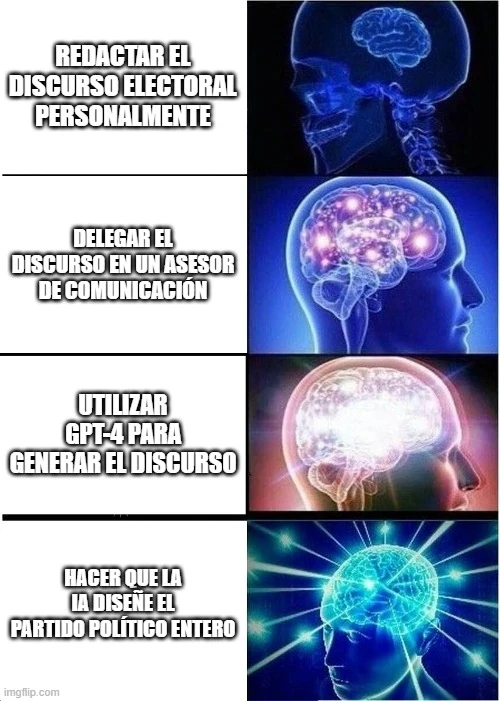

estrategIA #52 ·
De escribir el discurso al partido
El contexto
La escalera de cerebros lleva la delegación política desde un discurso hasta el diseño de una formación completa. La pieza acompañaba la reflexión sobre comunicación política e IA tras el congreso de ACOP.
Publicado en: estrategIA #52: El Congreso Internacional de Comunicación Política de ACOP, entre la sombra y la luz de la IA
Leer el texto de la imagen
REDACTAR EL DISCURSO ELECTORAL PERSONALMENTE DELEGAR EL DISCURSO EN UN ASESOR DE COMUNICACIÓN UTILIZAR GPT-4 PARA GENERAR EL DISCURSO HACER QUE LA IA DISEÑE EL PARTIDO POLÍTICO ENTERO
Marca de la herramienta visible en el original: imgflip.com.